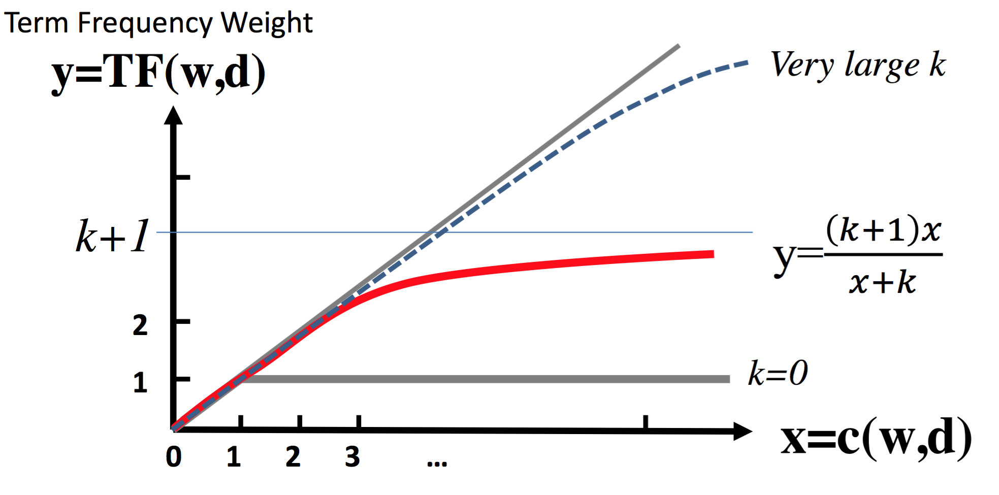
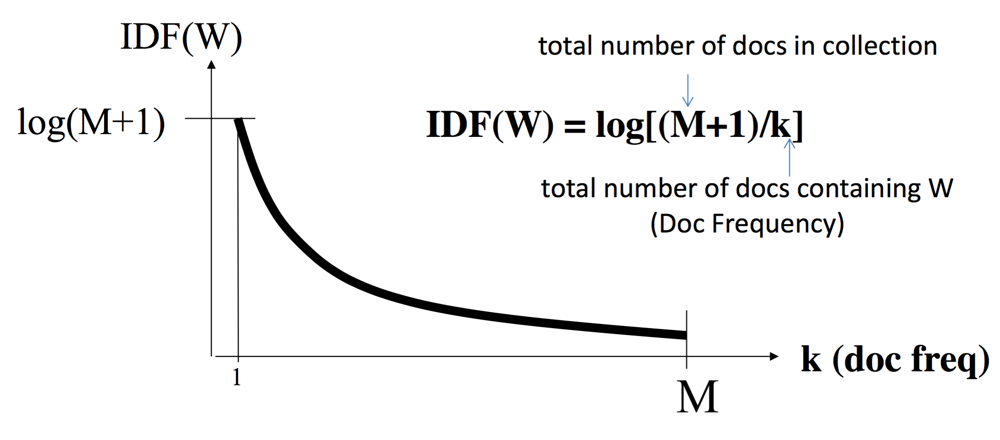

State of the Art
- value for word i in document vector: BM25(wi,D)
- normalize length of each document vector to 1
- distance(x⃗ ,y⃗ ) = ∑Ni=1IDF(wi)×x(i)×y(i)
BM-25: Term frequency weight
BM25(w,D)=1+k1+k/(c(w)1+b(|D|−|D¯|)/|D¯|)
- c(w): word count in document D
- |D|: document length
- |D¯|: average document length
- parameter k∈[0,∞): set upper bound to k+1
- parameter b∈[0,1]: control length normalization
Illustration for 1+k1+k/x:

IDF: Penalizing Popular Terms

Reference
Text Mining: https://www.coursera.org/learn/text-mining